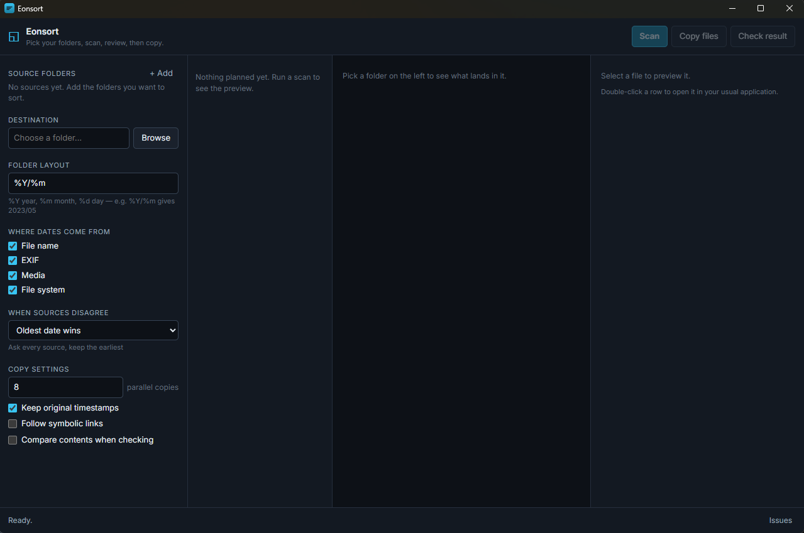

Proof of date · v0.0.2
The date on the file
isn't always the date
of the memory.
eonsort cross-examines five separate sources for when a photo or file was actually made, flags the ones a dead camera battery got wrong, and sorts the rest into a clean date tree — with the full plan on screen before a byte moves. Sources are only ever read.
Windows · macOS · Linux — desktop app and the eonsort command line tool. MIT licensed.
Where the date comes from
Four places carry a date.
Sometimes a fifth.
Every source that reports one is kept — each can be switched off. Three rules choose between them when they disagree.
IMG_20230506_101112.jpg, Screenshot 2021-07-04, Rechnung 06.05.2021 — and many more shapes.
DateTimeOriginal and friends, in JPEG, TIFF, PNG, WebP, HEIF and common raw formats.
The recording time inside the mvhd box of MP4, MOV, M4A and related containers.
Whichever of created or modified is older — the one every backup tool likes to overwrite.
After a scan, eonsort looks at each picture in the background and tags it — a forest, a dog, a birthday party. Then search for forest and dog in plain words.
SigLIP runs locally on the CPU. Nothing leaves your machine, and no runner has to be hosted.
Anomalies
A dead battery doesn't ask permission.
A camera whose battery died resets its clock to a factory default — usually 1 January of 2000, 2003 or 2015 — and every photo after that carries a date that looks entirely real. eonsort flags rather than quietly misfiles:
- ✕A date on a factory‑reset instant, in the future, or later than the file was written.
- ✕A run of files counting up from a reset date while the files were written years later.
- !A batch of files sharing one timestamp to the second.
- !A file stranded years from everything else in its folder, or out of step with its camera's counter.
Four ways to look
Walk into your archive.
Every view scopes to whatever you clicked — the folder tree, Timeline and Gallery show only those files. In the two walkable ones: click to take the mouse, WASD to move, Esc to give it back.
The whole plan in 3D
One point per date each source reported, coloured by confidence. Three layouts that morph into each other — a disagreement field, a time helix, a memory terrain. A reset date lifts off the disc like a spire on an empty plain.
A building out of your archive
One room per period, oldest first, a longer hall for a busy year. Pictures hang at eye height, videos play in frame, daylight falls through a clerestory band. Rooms open into one another as one enfilade.
Find it by what is in it
Tagging runs in the background once a scan has finished, so it never holds the scan up. Ask for forest and dog in ordinary words and every view narrows to the pictures that match, ranked by how well.
The same questions, flatter
A square per month, year by year — click to drop in, drag for a range. Time of day, where each date came from, how sure eonsort is, and where the bulk lands. Whatever you pick scopes the whole app.

Guarantees
Sources are only ever read.
Nothing is overwritten
Same‑name files are compared by content; identical ones are left alone, different ones stored beside as _dup_1.
Every copy is atomic
Written to staging, flushed, then renamed into place.
Everything resumes
The scan appends to its plan, the copy keeps a journal. Losing power costs nothing.
Sources stay untouched
Your originals are read to plan the move — never written, moved, or deleted.
Get it — v0.0.2
Pick your platform.
Free and open source, MIT licensed. Installers below, or build it yourself from source.
Or the command line
# scan, review, then copy — for scheduled jobs and very large archives $ eonsort sort --source "D:\Photos" --destination "E:\Sorted" # or run the phases separately $ eonsort scan --source "D:\Photos" --plan photos.jsonl $ eonsort show --plan photos.jsonl --suspect $ eonsort copy --plan photos.jsonl --destination "E:\Sorted"